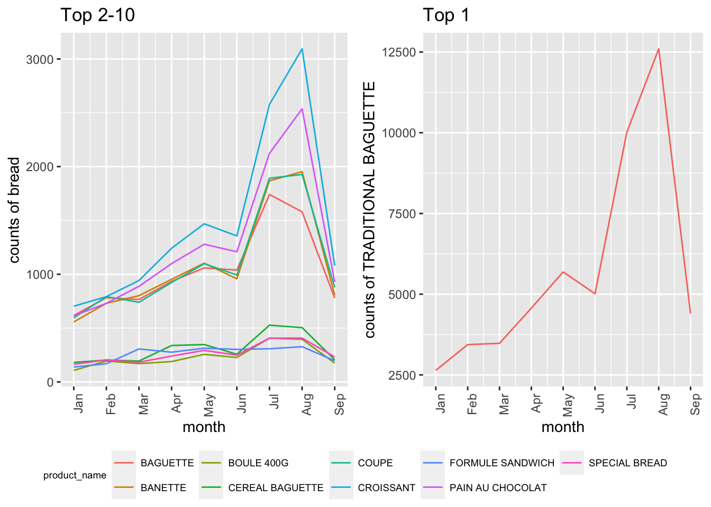
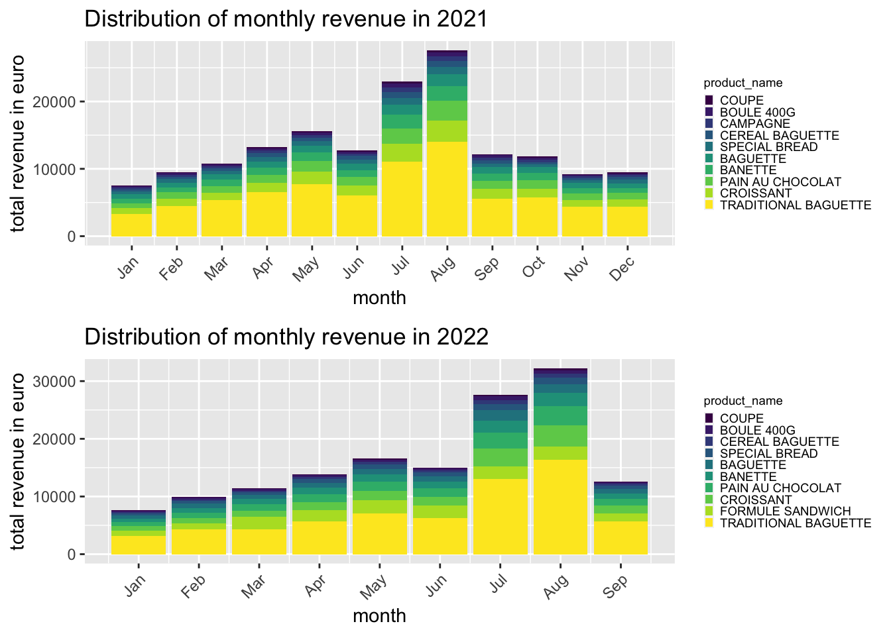

Plots
knitr::opts_chunk$set(message = FALSE)
library(tidyverse)
library(lubridate)
library(plotly)
library(patchwork)Data input and cleaning
bakery_df =
read_csv("./Data/Bakery_sales.csv") %>%
janitor::clean_names() %>%
mutate(
unit_price = str_replace(unit_price, "€", ""),
unit_price = str_replace(unit_price, ",", "."),
unit_price = as.numeric(unit_price),
product_name = article) %>%
filter(product_name != ".") %>%
select(-article)
bakery_df## # A tibble: 234,000 × 7
## x1 date time ticket_number quantity unit_price product_name
## <dbl> <date> <time> <dbl> <dbl> <dbl> <chr>
## 1 0 2021-01-02 08:38 150040 1 0.9 BAGUETTE
## 2 1 2021-01-02 08:38 150040 3 1.2 PAIN AU CHOCOLAT
## 3 4 2021-01-02 09:14 150041 2 1.2 PAIN AU CHOCOLAT
## 4 5 2021-01-02 09:14 150041 1 1.15 PAIN
## 5 8 2021-01-02 09:25 150042 5 1.2 TRADITIONAL BAGUET…
## 6 11 2021-01-02 09:25 150043 2 0.9 BAGUETTE
## 7 12 2021-01-02 09:25 150043 3 1.1 CROISSANT
## 8 15 2021-01-02 09:27 150044 1 1.05 BANETTE
## 9 18 2021-01-02 09:32 150045 3 1.2 TRADITIONAL BAGUET…
## 10 19 2021-01-02 09:32 150045 6 1.1 CROISSANT
## # … with 233,990 more rowsPie Charts
A pie chart showing the percentage of each product’s sale count (top 10)
plot_pie =
bakery_df %>%
group_by(product_name) %>%
summarize(n_obs = n()) %>%
arrange(desc(n_obs)) %>%
head(10) %>%
plot_ly(labels = ~product_name, values = ~n_obs, type = 'pie', colors = "viridis") %>%
layout(title = 'Top 10 favoriate bakeries',
xaxis = list(showgrid = FALSE, zeroline = FALSE, showticklabels = FALSE),
yaxis = list(showgrid = FALSE, zeroline = FALSE, showticklabels = FALSE))
plot_pieA pie chart showing the percentage of each product’s sale count (top 10) in 2021/2022
plot_pie =
bakery_df %>%
separate(date, into = c("year", "month", "day"), sep = "-") %>%
mutate(year = as.numeric(year),
month = as.integer(month),
day = as.integer(day),)
plot_pie_2021 =
plot_pie %>%
filter(year == 2021) %>%
group_by(product_name) %>%
summarize(n_obs = n()) %>%
arrange(desc(n_obs)) %>%
head(10) %>%
plot_ly(labels = ~product_name, values = ~n_obs, type = 'pie', colors = "viridis") %>%
layout(title = 'Top 10 favoriate bakeries in 2021',
xaxis = list(showgrid = FALSE, zeroline = FALSE, showticklabels = FALSE),
yaxis = list(showgrid = FALSE, zeroline = FALSE, showticklabels = FALSE))
plot_pie_2022 =
plot_pie %>%
filter(year == 2022) %>%
group_by(product_name) %>%
summarize(n_obs = n()) %>%
arrange(desc(n_obs)) %>%
head(10) %>%
plot_ly(labels = ~product_name, values = ~n_obs, type = 'pie', colors = "viridis") %>%
layout(title = 'Top 10 favoriate bakeries in 2022',
xaxis = list(showgrid = FALSE, zeroline = FALSE, showticklabels = FALSE),
yaxis = list(showgrid = FALSE, zeroline = FALSE, showticklabels = FALSE))
plot_pie_2021plot_pie_2022Line Plots
Top 10 favorite bread monthly sale counts in 2021
top_line =
bakery_df %>%
separate(date, into = c("year", "month", "day"), sep = "-") %>%
mutate(year = as.numeric(year),
month = as.integer(month),
day = as.integer(day),) %>%
filter(year == 2021) %>%
select (year, month, product_name, quantity) %>%
group_by (year, month, product_name) %>%
mutate (total_counts = sum (quantity)) %>%
distinct(year, month, product_name,total_counts)
top_line1_2021 =
top_line %>%
filter(product_name %in% c("TRADITIONAL BAGUETTE")) %>%
ggplot(aes(x =month, y = total_counts, color = product_name)) +
geom_line() +
theme(legend.position = "bottom") +
labs(x = "month",
y = "counts of bread",
title = "monthly sale counts of the most popular bread in 2021") +
scale_x_continuous(
breaks = c(1, 2, 3, 4, 5, 6, 7, 8, 9, 10, 11, 12),
labels = c("Jan","Feb","Mar","Apr","May", "Jun", "Jul", "Aug", "Sep", "Oct", "Nov", "Dec"))
top_line2_2021 =
top_line %>%
filter(product_name %in% c("COUPE", "BAGUETTE","BANETTE", "CROISSANT", "PAIN AU CHOCOLAT", "CEREAL BAGUETTE", "SPECIAL BREAD", "CAMPAGNE", "BOULE 400G")) %>%
ggplot(aes(x =month, y = total_counts, color = product_name)) +
geom_line() +
theme(legend.position = "bottom") +
labs(x = "month",
y = "counts of bread",
title = "top 2-10 popular bread monthly sale counts in 2021") +
scale_x_continuous(
breaks = c(1, 2, 3, 4, 5, 6, 7, 8, 9, 10, 11, 12),
labels = c("Jan","Feb","Mar","Apr","May", "Jun", "Jul", "Aug", "Sep", "Oct", "Nov", "Dec"))
top_line1_2021+top_line2_2021
Top 10 favorite bread monthly sale counts in 2022
top_line =
bakery_df %>%
separate(date, into = c("year", "month", "day"), sep = "-") %>%
mutate(year = as.numeric(year),
month = as.integer(month),
day = as.integer(day),) %>%
filter(year == 2022) %>%
select (year, month, product_name, quantity) %>%
group_by (year, month, product_name) %>%
mutate (total_counts = sum (quantity)) %>%
distinct(year, month, product_name,total_counts)
top_line1_2022 =
top_line %>%
filter(product_name %in% c("TRADITIONAL BAGUETTE")) %>%
ggplot(aes(x =month, y = total_counts, color = product_name)) +
geom_line() +
theme(legend.position = "bottom") +
labs(x = "month",
y = "counts of bread",
title = "monthly sale counts of the most popular bread in 2022") +
scale_x_continuous(
breaks = c(1, 2, 3, 4, 5, 6, 7, 8, 9, 10, 11, 12),
labels = c("Jan","Feb","Mar","Apr","May", "Jun", "Jul", "Aug", "Sep", "Oct", "Nov", "Dec"))
top_line2_2022 =
top_line %>%
filter(product_name %in% c("COUPE", "BAGUETTE","BANETTE", "CROISSANT", "PAIN AU CHOCOLAT", "SPECIAL BREAD", "FORMULE SANDWICH","CEREAL BAGUETTE", "BOULE 400G")) %>%
ggplot(aes(x =month, y = total_counts, color = product_name)) +
geom_line() +
theme(legend.position = "bottom") +
labs(x = "month",
y = "counts of bread",
title = "top 2-10 popular bread monthly sale counts in 2022") +
scale_x_continuous(
breaks = c(1, 2, 3, 4, 5, 6, 7, 8, 9, 10, 11, 12),
labels = c("Jan","Feb","Mar","Apr","May", "Jun", "Jul", "Aug", "Sep", "Oct", "Nov", "Dec"))
top_line1_2022+top_line2_2022
A line plot of trends showing total sale revenue by month (trend)
plot_line =
bakery_df %>%
separate(date, into = c("year", "month", "day"), sep = "-") %>%
mutate(year = as.numeric(year),
month = as.integer(month),
day = as.integer(day),) %>%
group_by(year, month) %>%
mutate(rev = quantity * unit_price) %>%
summarize(month_rev = sum(rev)) %>%
plot_ly(x = ~month, y = ~month_rev, mode = 'lines+markers', alpha = 0.5)
plot_line Scatterplot
Ranking of mean prices of different products
test =
bakery_df %>%
group_by(product_name) %>%
summarize(mean_price = mean(unit_price)) %>%
arrange(desc(mean_price)) %>%
mutate(product_name = fct_reorder(product_name, mean_price)) %>%
ggplot(aes(x =product_name, y = mean_price, color = product_name)) +
geom_point() +
theme(axis.text.x = element_text(angle=90,hjust = 1)) +
labs(x = "name of products",
y = "mean prices",
title = "ranking of mean prices of different products") +
theme(axis.text.x = element_text(angle = 90, hjust = 1), legend.position = "none")
test 
Bar graphs
Ranking of total revenue of top 10 products in 2021/2022
total_rev_bar=
bakery_df %>%
group_by(product_name) %>%
mutate(rev = quantity * unit_price) %>%
summarize(prod_rev = sum(rev)) %>%
arrange(desc(prod_rev))
total_rev_bar_2021=
total_rev_bar %>%
filter(product_name %in% c("TRADITIONAL BAGUETTE", "COUPE", "BAGUETTE","BANETTE", "CROISSANT", "PAIN AU CHOCOLAT", "CEREAL BAGUETTE", "SPECIAL BREAD", "CAMPAGNE", "BOULE 400G")) %>%
mutate(product_name = fct_reorder(product_name, prod_rev)) %>%
ggplot(aes(x =product_name, y= prod_rev, fill=product_name)) +
geom_bar(stat="identity", width=0.5) +
labs(x = "name of products",
y = "total revenue",
title = "ranking in 2021") +
theme(axis.text.x = element_text(angle = 45, hjust = 1), legend.position = "none")
total_rev_bar_2022=
total_rev_bar %>%
filter(product_name %in% c("TRADITIONAL BAGUETTE", "COUPE", "BAGUETTE","BANETTE", "CROISSANT", "PAIN AU CHOCOLAT", "SPECIAL BREAD", "FORMULE SANDWICH","CEREAL BAGUETTE", "BOULE 400G")) %>%
mutate(product_name = fct_reorder(product_name, prod_rev)) %>%
ggplot(aes(x =product_name, y= prod_rev, fill=product_name)) +
geom_bar(stat="identity", width=0.5) +
labs(x = "name of products",
y = "total revenue",
title = "ranking in 2022") +
theme(axis.text.x = element_text(angle = 45, hjust = 1), legend.position = "none")
total_rev_bar_2021+total_rev_bar_2022
Distribution of monthly revenue in 2021/2022
dis_rev_bar=
bakery_df %>%
separate(date, into = c("year", "month", "day"), sep = "-") %>%
mutate(year = as.numeric(year),
month = as.integer(month),
day = as.integer(day),)
dis_rev_bar_2021=
dis_rev_bar %>%
filter(year == 2021,
product_name %in% c("TRADITIONAL BAGUETTE", "COUPE", "BAGUETTE","BANETTE", "CROISSANT", "PAIN AU CHOCOLAT", "CEREAL BAGUETTE", "SPECIAL BREAD", "CAMPAGNE", "BOULE 400G")) %>%
group_by(year, month, product_name) %>%
mutate(rev = quantity * unit_price) %>%
summarize(prod_dis_rev = sum(rev)) %>%
arrange(desc(prod_dis_rev)) %>%
mutate(product_name = fct_reorder(product_name, prod_dis_rev)) %>%
ggplot(aes(x =month, y= prod_dis_rev, fill=product_name)) +
geom_bar(stat="identity", position="stack") +
labs(x = "month",
y = "total revenue",
title = "distribution of monthly revenue in 2021") +
theme(axis.text.x = element_text(angle = 45, hjust = 1), legend.position = "bottom") +
scale_x_continuous(
breaks = c(1, 2, 3, 4, 5, 6, 7, 8, 9, 10, 11, 12),
labels = c("Jan","Feb","Mar","Apr","May", "Jun", "Jul", "Aug", "Sep", "Oct", "Nov", "Dec"))
dis_rev_bar_2022=
dis_rev_bar %>%
filter(year == 2022,
product_name %in% c("TRADITIONAL BAGUETTE", "COUPE", "BAGUETTE","BANETTE", "CROISSANT", "PAIN AU CHOCOLAT", "SPECIAL BREAD", "FORMULE SANDWICH","CEREAL BAGUETTE", "BOULE 400G")) %>%
group_by(year, month, product_name) %>%
mutate(rev = quantity * unit_price) %>%
summarize(prod_dis_rev = sum(rev)) %>%
arrange(desc(prod_dis_rev)) %>%
mutate(product_name = fct_reorder(product_name, prod_dis_rev)) %>%
ggplot(aes(x =month, y= prod_dis_rev, fill=product_name)) +
geom_bar(stat="identity", position="stack") +
labs(x = "month",
y = "total revenue",
title = "distribution of monthly revenue in 2022") +
theme(axis.text.x = element_text(angle = 45, hjust = 1), legend.position = "bottom") +
scale_x_continuous(
breaks = c(1, 2, 3, 4, 5, 6, 7, 8, 9, 10, 11, 12),
labels = c("Jan","Feb","Mar","Apr","May", "Jun", "Jul", "Aug", "Sep", "Oct", "Nov", "Dec"))
dis_rev_bar_2021+dis_rev_bar_2022